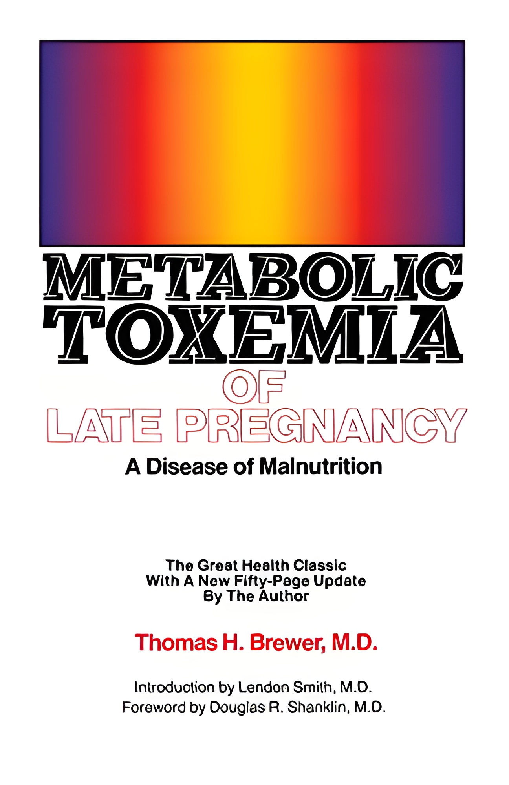

Ray Peats Early Thoughts on Protein
Up until the last few years of his life, Ray consistently advocated at least 80 grams of high-quality, balanced protein for women, and more for men. His later shift to a lower protein diet, which could be due to his older age, was meant to lower mTOR activity, which is known to be associated with aging and degenerative changes. But we must not interpret this move to a lower protein diet as a general recommendation. Context is everything, as he used to write, and for a young or middle-aged person, I still think that his earlier recommendations should be followed.
Two persons decidedly influenced Ray’s early thinking on protein. The first was Dr. Brewer, who used to treat pre-eclampsia with a high-protein high-salt diet. The rationale behind this diet was that the high blood pressure of pre-eclampsia was an adaptation to the depleted blood volume of the pregnant woman. The high salt would enable plasma volume expansion, and the high protein would increase the amount of albumin in the blood. Albumin helps to retain fluid inside the circulatory system and prevent it from leaking into the interstitial space. Ray contrasted Dr. Brewer’s approach, which he saw as physiological, with the modern approach to treating pre-eclampsia and high blood pressure during pregnancy with salt restriction and diuretics. While these measures would indeed lower blood pressure they would also aggravate the underlying problem of low blood volume, increasing the risk for a full attack of eclampsia.
Ray wrote about pre-eclampsia in many of his articles, and it is clear that for him it was a “model disease”. Everyone who thinks deeply about physiology and the commonalities of disease will end up with some models that illustrate the general features shared with other diseases. For Ray, this list also included hypothyroidism as a basic cause for many other diseases, including MS, arthritis, and epilepsy, among many others. What diseases do you think about? Deeply investigating a particular disease process can lead to valid insights that are applicable in many other situations.
The other person who influenced Ray’s thinking was a researcher named Dr. Biskind. In the 1940’s he published several articles that dealt with the detoxification of estrogen by the liver. Dr. Biskind noted that a B vitamin deficiency would decrease the liver’s clearance of protein. He also experimented with inducing protein deficiency in animals and observed that their livers were much more inefficient at detoxifying estrogen. Ray’s thought has not remained static ( in a future article I will discuss how it changed with time) but two of the basic pillars of his thought that have not changed are the importance of thyroid and the dangers of excess estrogen. Knowing that the liver is important both for activating thyroid hormone and for eliminating estrogen it is not difficult to see why Dr. Biskind’s research resonated with Ray.
Ray synthesized the thoughts of many important researchers and scientists, adding his insight and genius. Knowing who influenced Ray’s thinking can give us a better understanding both of Ray’s thoughts and Ray as a person.